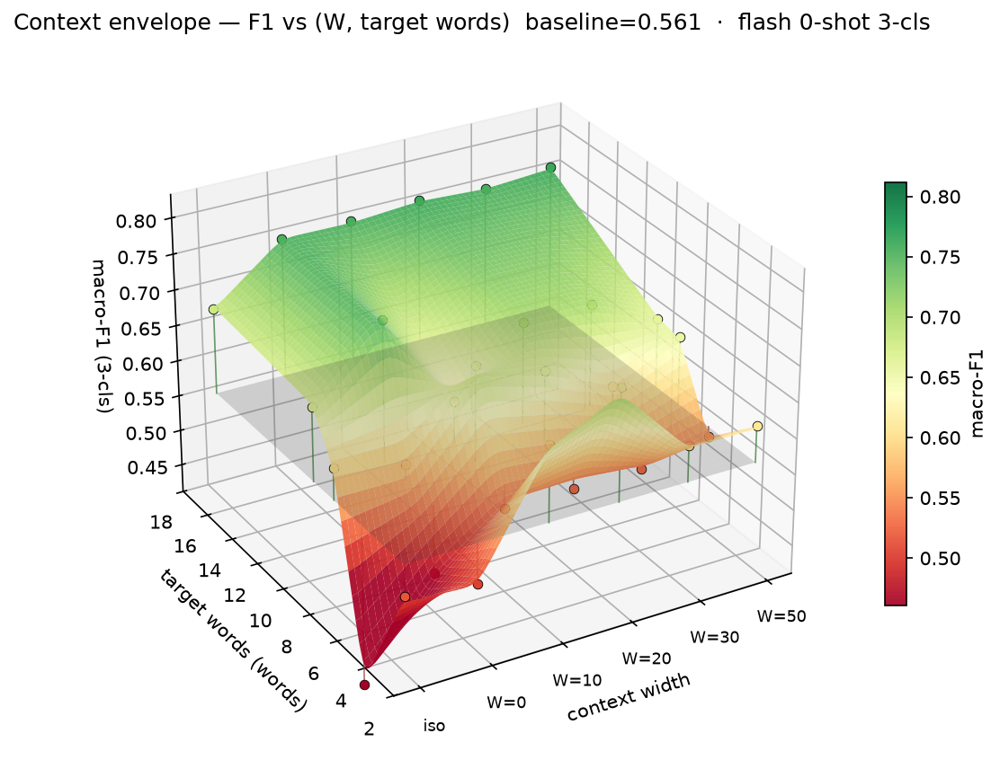
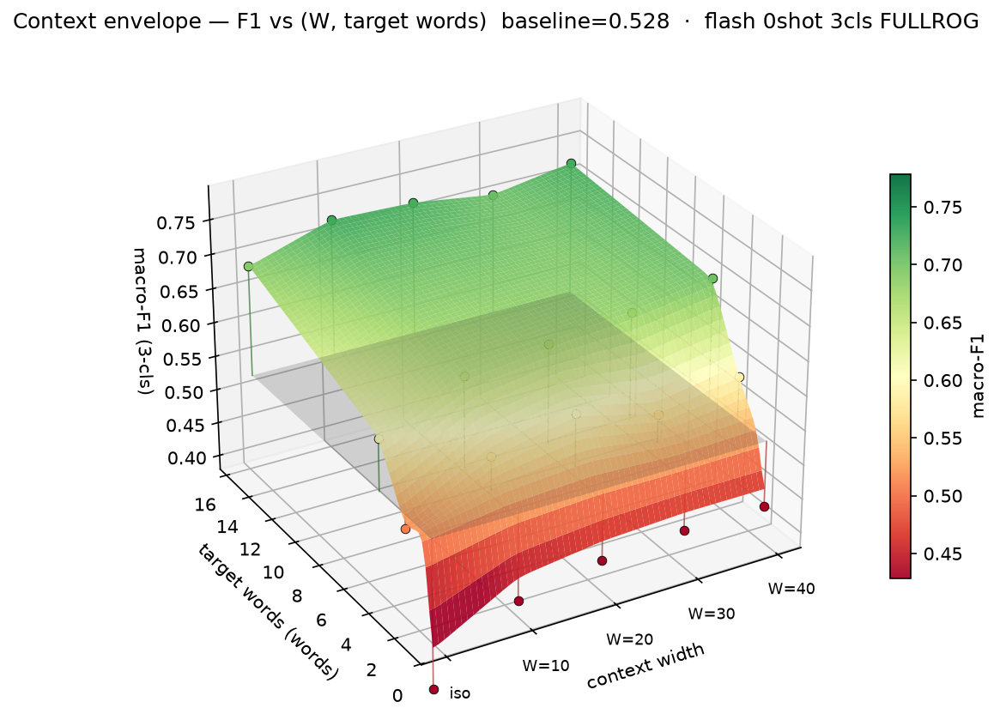
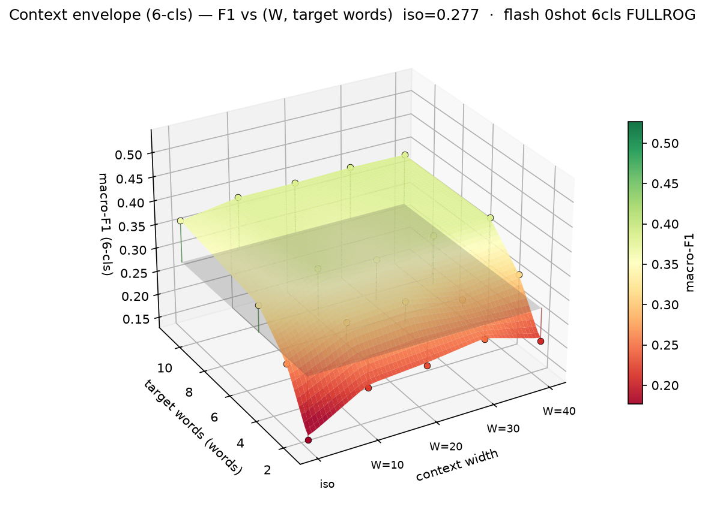
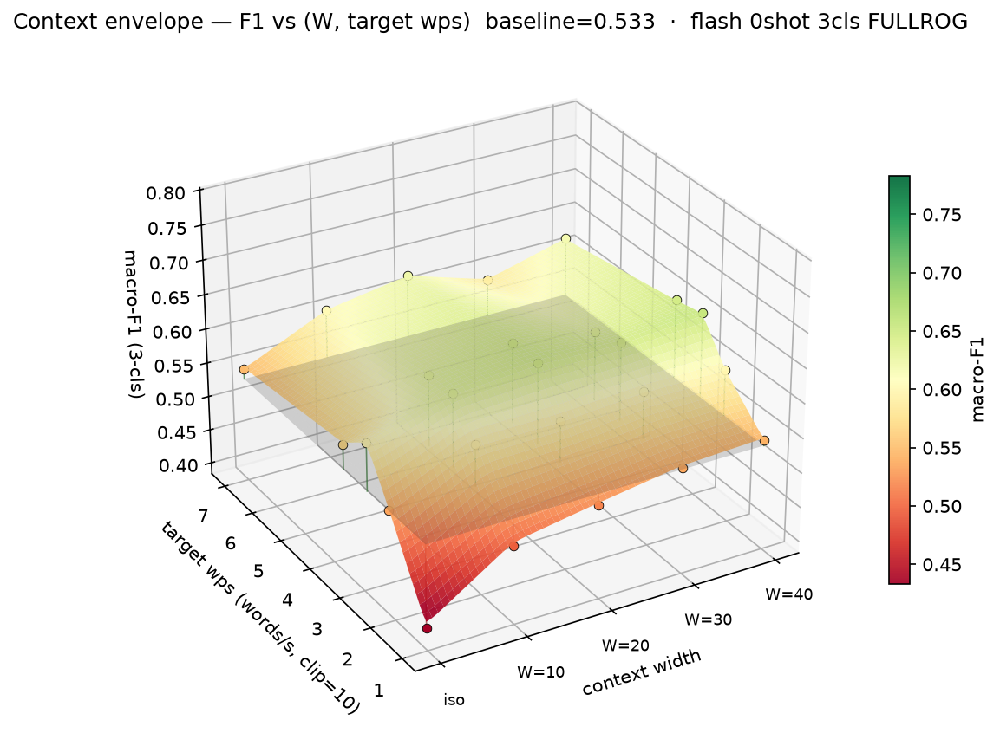
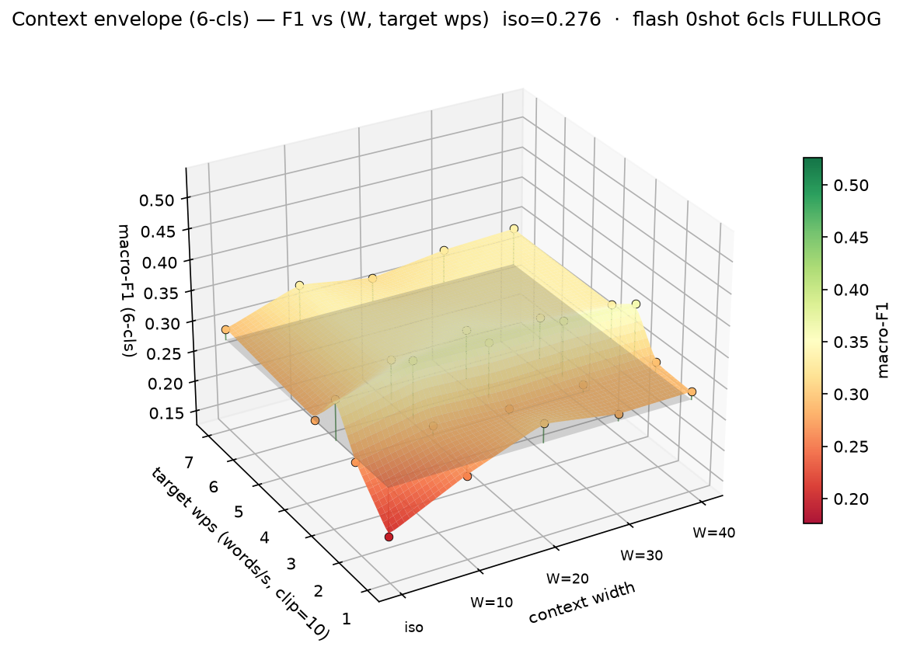

170-subset context envelopes (words + WPS) — outdated, see full-ROG envelopes below
Earlier small-n (170/5 ≈ 34 per bin) 3-D surfaces. Shape was noisy; the full-ROG envelopes below replace these with ~445/bin.


Phase 1 — Gemini Flash and Claude Haiku, zero-shot and 18-exemplar few-shot, 3-class and 6-class. Fast, cheap, and tells us where the signal is reachable through a closed-weight API before we touch local fine-tuning.
| model | shot | 3-cls F1 | 6-cls F1 | 3-cls ρ | 6-cls ρ |
|---|---|---|---|---|---|
| random (uniform) | baseline | 0.350 | 0.183 | +0.101 | −0.044 |
| majority-class | baseline | 0.170 | 0.049 | 0.000 | 0.000 |
| ParlaSent zero-shot (stock) | baseline | 0.384 | 0.215 | +0.298 | +0.410 |
| Gemini Flash 3.8 | few-shot | 0.607 | 0.411 | 0.503 | 0.568 |
| Gemini Flash 3.8 | 0-shot | 0.592 | 0.349 | 0.481 | 0.596 |
| Claude Haiku 4.5 | few-shot | 0.534 | 0.337 | 0.420 | 0.448 |
| Claude Haiku 4.5 | 0-shot | 0.467 | 0.213 | 0.334 | 0.341 |
Baselines on the same 170-instance eval set.
Subset is class-balanced by construction (29 per 6-class), so majority-class is the weakest
baseline here and random uniform is the honest floor. ParlaSent zero-shot
is the stock classla/xlm-r-parlasent head applied to ROG transcripts with no fine-tune —
it barely beats random on this balanced subset, i.e. parliamentary-trained sentiment transfers weakly to
dialogue when all classes are equally represented. Flash few-shot beats ParlaSent 0shot by +0.22 F1_3.
Full numbers: runs/baselines/baselines_subset170.md.
max_tokens 50 → 500 so the model's mandatory reasoning had room.Same prompt for both models; only the label list changes between 6cls and 3cls.
Few-shot prepends 18 fixed exemplars (3 per 6-class, drawn from train, speaker-disjoint from eval)
as alternating user/assistant turns; 3-class runs relabel the same exemplars to the collapsed label.
Request body includes "usage":{"include":true} so OpenRouter returns populated cost.
Source: scripts/2_probe_text/02_run_openrouter_text.py.
System message (6-class)
You classify Slovenian spoken-dialogue utterances by sentiment. Choose exactly one label from this list: - predominantlyNegative - mixedNegative - neutralNegative - neutralPositive - mixedPositive - predominantlyPositive Reply with only the label. No explanation.
System message (3-class) — same wording, label list becomes
- negative / - neutral / - positive.
User turn (target and each few-shot exemplar)
Utterance: {text}
Few-shot layout
system : <system prompt>
user : Utterance: {exemplar_1_text}
assistant: {exemplar_1_label}
user : Utterance: {exemplar_2_text}
assistant: {exemplar_2_label}
... (18 exemplars total in 6-cls; the same texts, collapsed labels in 3-cls)
user : Utterance: {target_text}
Phase 2 — give the probe more axes: bigger models (do the frontier OpenAI slugs find more signal than Flash?) and conversational context (does showing neighbours around each target help?). Two knobs, back-to-back.
Why GPT at all? Mochtak, Rupnik and Ljubešić (ParlaSent, 2024 [1]) benchmark their XLM-R-parlasent model against GPT-3.5 in zero-shot sentiment identification on parliamentary text — GPT is the generic LLM frontier reference in that paper. We re-ran the same frontier-vs-fine-tune question on dialogue with the current OpenAI tier (GPT-4o, GPT-5, GPT-5.6-luna) and the current cheap tier (Flash, Haiku) side by side, same prompts.
Short answer: on ROG dialogue, Flash fshot 3-cls = 0.607 still holds the crown. GPT-5 fshot sits ~−0.03 lower at ~2× Flash's cost; its 6-cls fshot parse rate drops to 0.77 as reasoning exhausts the token budget before a clean label. Cheap Luna 0-shot matches GPT-5 0-shot at ~1/25 the cost. The cost-efficient tier is where the signal lives, not the frontier.
| model | shot | 3-cls F1 | 6-cls F1 | 3-cls ρ | 6-cls ρ | parse | cost |
|---|---|---|---|---|---|---|---|
| Gemini Flash 3.8 (prev) | few-shot | 0.607 | 0.411 | 0.503 | 0.568 | 1.00 | $0.33 |
| Claude Haiku 4.5 (prev) | few-shot | 0.534 | 0.337 | 0.420 | 0.448 | 1.00 | $0.03 |
| GPT-5 | few-shot | 0.579 | 0.375 | 0.466 | 0.595 | 0.77* | $0.41 |
| GPT-5 | 0-shot | 0.552 | 0.344 | 0.451 | 0.530 | 0.91 | $0.31 |
| GPT-4o | few-shot | 0.551 | 0.377 | 0.436 | 0.529 | 1.00 | $0.23 |
| GPT-4o | 0-shot | 0.531 | 0.292 | 0.451 | 0.522 | 1.00 | $0.03 |
| GPT-5.6-luna | 0-shot | 0.552 | 0.342 | 0.495 | 0.571 | 1.00 | $0.01 |
| GPT-5.6-luna | few-shot | 0.526 | 0.322 | 0.424 | 0.465 | 1.00 | $0.02 |
Same 170-instance subset, same prompts, same parse rules.
* GPT-5 fshot 6-cls drops to 77% parse rate — reasoning exhausts the 500-token
budget before emitting a clean label on long few-shot prefixes. Flash fshot 3-cls (0.607) still
holds the single-utterance crown. GPT-5 fshot 3-cls = 0.579 is within 0.03 of Haiku fshot and
~2× the cost of Flash. Luna 0-shot 3-cls (0.552) matches GPT-5 0-shot within noise at ~1/25 the
cost — the cheap current-gen tier is where the signal lives.
Full numbers: runs/batch_FULL_20261117_104225/batch_results.csv.
Isolated utterance vs 3-turn window (previous · target · next), same 170 targets.
| model | context | shot | 3-cls F1 | 6-cls F1 | 3-cls ρ | 6-cls ρ |
|---|---|---|---|---|---|---|
| Gemini Flash 3.8 | iso (single-utt) | 0shot | 0.592 | 0.349 | 0.481 | 0.596 |
| Gemini Flash 3.8 | ctx3 (prev · target · next) | 0shot | 0.639 | 0.380 | 0.603 | 0.702 |
| Claude Haiku 4.5 | iso (single-utt) | 0shot | 0.467 | 0.213 | 0.334 | 0.341 |
| Claude Haiku 4.5 | ctx3 (prev · target · next) | 0shot | 0.515 | 0.235 | 0.434 | 0.534 |
Iso and ctx3 rows share the exact same 170 target instances — only the prompt changes. Context window = previous + target + next utterance
from the same conversation, joined on file_id+start_t. Target is marked [TARGET] at end-of-line; speakers collapsed to
SPK1/SPK2. All 170 targets have both neighbours present (zero boundary pads).
Caveat: 75 of 170 windows (44 %) are single-speaker (one talker's utterance split into three) — the lift holds on mixed-speaker and single-speaker subsets both.
Full numbers: runs/batch_CTX_20261117_124601/batch_results.csv.
Context helps, model-agnostic. Both Flash and Haiku gain exactly +0.048 F1_3 (0shot, 3-cls) when the single-utterance prompt is swapped for the 3-turn window. Flash ctx3 0shot (0.639) beats Flash iso few-shot (0.607) — context takes the single-shot crown from few-shot, and closes about a third of the gap to the IAA ceiling of 0.699.
Refining the context builder. The 3-turn neighbours above were ~1 s each (2–3 words) — not real conversational structure.
We switched to a word-count-threshold accumulator: pull utterances per side until cumulative word count ≥ W, sweep W as a third axis
(10 · 20 · 30 · 50 words) to find a peak or plateau — the same shape as the duration envelope in Report 6.
Code: scripts/2_probe_text/03_run_openrouter_text_context.py --context-words W.
First pass on a class-balanced 170-instance subset. Established that context helps; the full-ROG rerun below supersedes these numbers. Kept here for the W=50 datapoint (not re-run on FULLROG) and the Haiku cross-check. Read for the shape, not the absolute F1.
| W | Flash 3-cls F1 | Haiku 3-cls F1 | Flash 6-cls F1 | Haiku 6-cls F1 | Flash 6-cls ρ | Haiku 6-cls ρ |
|---|---|---|---|---|---|---|
| iso (no ctx) | 0.592 | 0.467 | 0.349 | 0.213 | 0.596 | 0.341 |
| W=0 (±1 utt) | 0.639 | 0.515 | 0.380 | 0.235 | 0.702 | 0.534 |
| W=10 | 0.674 | 0.541 | 0.372 | 0.304 | 0.717 | 0.639 |
| W=20 | 0.685 | 0.569 | 0.366 | 0.335 | 0.708 | 0.616 |
| W=30 | 0.661 | 0.571 | 0.394 | 0.368 | 0.759 | 0.644 |
| W=50 | 0.670 | 0.562 | 0.392 | 0.362 | 0.743 | 0.624 |
| IAA ceiling | 0.699 | — | 0.625 | — | — | — |
All rows 0shot, same 170-instance subset, same prompts. W is the per-side word-count threshold; each side accumulates
neighbour utterances in chronological order until cumulative word count crosses W. W=0 preserves the legacy ±1-utterance behaviour.
Single-speaker windows drop 75 → 26 → 3 → 0 as W goes 0 → 10 → 20 → 30, so by W=20 almost every window contains real
turn-taking. Full numbers: docs/ref_results/text_context/CTX_W{0,10,20,30,50}_...csv.
Earlier small-n (170/5 ≈ 34 per bin) 3-D surfaces. Shape was noisy; the full-ROG envelopes below replace these with ~445/bin.

Full ROG test (n=2233), Flash 0shot, both schemes swept across W ∈ {iso, 10, 20, 30, 40}. 3-cls peak W=40, F1_3 = 0.621 (+0.075 vs iso). 6-cls peak W=30, F1_6 = 0.331 (+0.050 vs iso). 3-cls keeps climbing with more context; 6-cls plateaus at W=10. 3-cls-native is not scheme-invariant — asking Flash directly for three categories beats asking for six and collapsing, and the gap widens with context.
W-sweep whole-eval metrics.
| config | n | 3-cls F1 | 6-cls F1 | 3-cls ρ | 6-cls ρ | acc (3-cls) | Δ F1_3 vs iso |
|---|---|---|---|---|---|---|---|
| Flash 0shot iso | 2233 | 0.546 | 0.281 | 0.353 | 0.303 | 0.741 | — |
| Flash 0shot W=10 | 2233 | 0.603 | 0.326 | 0.447 | 0.544 | 0.769 | +0.057 |
| Flash 0shot W=20 | 2233 | 0.616 | 0.328 | 0.464 | 0.549 | 0.775 | +0.070 |
| Flash 0shot W=30 | 2233 | 0.608 | 0.331 | 0.449 | 0.562 | 0.773 | +0.062 |
| Flash 0shot W=40 | 2233 | 0.621 | 0.329 | 0.470 | 0.566 | 0.778 | +0.075 |
| full-ROG majority-class | 2233 | 0.278 | 0.125 | 0.000 | 0.000 | 0.718 | — |
| (reference) IAA ceiling (170-subset) | 170 | 0.699 | 0.625 | — | — | — | — |
Same 2233 instances per row (every row shares the exact FULLROG eval set); only the prompt changes. Δ F1_3 is vs the iso row.
No majority collapse at any W (acc 0.78 at W=40 vs majority 0.72; F1_3 is more than double majority).
Runs: runs/from_remote/Full_ROG_dia-v2_OR_test/batch_FULLROG_{,CTXW10,CTXW20,CTXW30,CTXW40}{,_6cls}_*.
Both schemes gain from context, but shape differs. 3-cls F1 climbs iso 0.546 → W=40 0.621 (+0.075) and the curve is still rising at W=40 (small 0.008 dip at W=30 vs W=20 is within noise). 6-cls F1 climbs iso 0.281 → W=10 0.326 (+0.045) and then plateaus flat through W=40 — more context doesn't buy more fine-grained accuracy after W=10. 6-cls ρ keeps rising (iso 0.303 → W=40 0.566) even when nominal F1 plateaus — context sharpens the ordinal order of predictions more than their label choice.
Still the LLM ceiling for this project. Flash W=40 FULLROG 0.621 beats every local fine-tune cell on the same slice (Report 4: best local
R_full × parlasent iso = 0.469).
Prompt sensitivity — 3-cls-native vs 6-cls collapsed to 3-cls.
| config | 3-cls-native F1_3 | 6-cls → 3-cls collapsed F1_3 | Δ (native − collapsed) |
|---|---|---|---|
| Flash 0shot iso | 0.546 | 0.475 | +0.071 |
| Flash 0shot W=10 | 0.603 | 0.498 | +0.105 |
| Flash 0shot W=20 | 0.616 | 0.491 | +0.125 |
| Flash 0shot W=30 | 0.608 | 0.502 | +0.106 |
| Flash 0shot W=40 | 0.621 | 0.493 | +0.128 |
Same 2233 instances per row. Collapse mapping: {predNeg, mixNeg} → negative; {neuNeg, neuPos} → neutral; {mixPos, predPos} → positive.
Scheme matters — run the scheme you want. 3-cls-native beats 6-cls-collapsed-to-3-cls at every W, and the gap widens with context from +0.07 at iso to +0.13 at W=40. The 3-cls prompt genuinely sharpens the 3-way decision boundary in a way that merging 6-cls labels post-hoc can't recover. 6-cls is not a cost-free superset of 3-cls on this model.
Context envelopes — F1 vs (W, target feature) on full-ROG (n=2233, ~445/bin).
Four 3-D surfaces: 3-cls and 6-cls, each over target word count and target WPS. Left column is 3-cls, right column is 6-cls; top row is word count, bottom is WPS. Transparent gray plane is iso F1 averaged across bins; stems pierce above (green) where context helped and below (red) where it hurt. Duration axis skipped — words already covers absolute length for text; duration is the audio-side lever (Report 5, Report 6).




Ceiling break on 3-cls words. At the longest-word bin (>6 words), Flash 3-cls hits F1 = 0.728 at W=10 — above the 0.699 IAA ceiling. On that slice Flash disagrees with the curator less often than annotators do with each other. Long-target utterances carry their own signal; context at any W already suffices to break ceiling there.
Where context pays most. On both schemes the biggest lift is at the short-target and slow-speech bins: 3-cls words 1-bin iso 0.311 → W=40 0.432 (+0.12 F1_3); 3-cls WPS low-WPS bin iso 0.414 → W=40 0.541 (+0.13 F1_3); 6-cls words 1-bin iso 0.147 → W=30 0.246 (+0.10 F1_6); 6-cls WPS low-WPS iso 0.199 → W=20 0.307 (+0.11 F1_6). Short utterances really do need context; long ones already carry their own signal.
3-cls and 6-cls differ on context saturation. 3-cls keeps climbing: WPS peak is at W=40 (0.656 mid-WPS bin) and the whole-eval F1 is still rising past W=30. 6-cls plateaus at W=10: WPS peak is 0.369 at W=10 mid-WPS, words peak 0.386 at W=30 — the surface is essentially flat across W.
Plot caveats.
The 3-cls words plot has a degenerate quantile bin at (1 < words < 2) — word counts are integers and 1-word utterances are ~46 % of ROG, so the top-end quantile edges collapse.
The 6-cls plots and the local-finetune plot (Report 4) use manual word-count edges {1, 2, 4, 6, 16} instead, which avoids the collapse.
Z-axis scale is not matched across the four plots (words vs WPS have different F1 ranges) — a figure-pair rewrite is queued (scripts/6_sent_duration/render_ctx_envelopes_fullrog.py).
COMMANDS.md).
system : You classify Slovenian spoken-dialogue utterances by sentiment.
You are shown a series of consecutive turns from one conversation
([NONE] = no turn in that position); classify ONLY the turn marked
[TARGET], using the other turns as context.
Choose exactly one label from this list:
- negative
- neutral
- positive
Reply with only the label. No explanation.
user : Conversation:
[SPK1] prev utterance one (accumulated until cumulative word count ≥ W=30)
[SPK2] prev utterance two
[SPK1] prev utterance three
[SPK2] {target_text} [TARGET]
[SPK1] next utterance one (accumulated until cumulative word count ≥ W=30)
[SPK2] next utterance two
Window construction: per-side word-count accumulator (--context-words W);
speakers collapsed to SPK1/SPK2/... in chronological first-seen order; boundary pads via
[NONE]. 6-cls variant lists the six long labels instead of the three. Target
marker tested in a sidecar — eol (end-of-line) wins because own_line
broke Haiku parsing. Verbatim script:
scripts/2_probe_text/03_run_openrouter_text_context.py (see system_prompt,
render_window).
classla/xlm-r-parlasent.
Benchmarks a parliamentary-tuned XLM-R against GPT-3.5 zero-shot — the reference point for our cheap-vs-frontier LLM probes above.ParlaSpeech-SI.
Source of the parliament-speech transcripts + audio used as the P training mixture in Report 4.FacebookAI/xlm-roberta-large backbone used across Report 4.